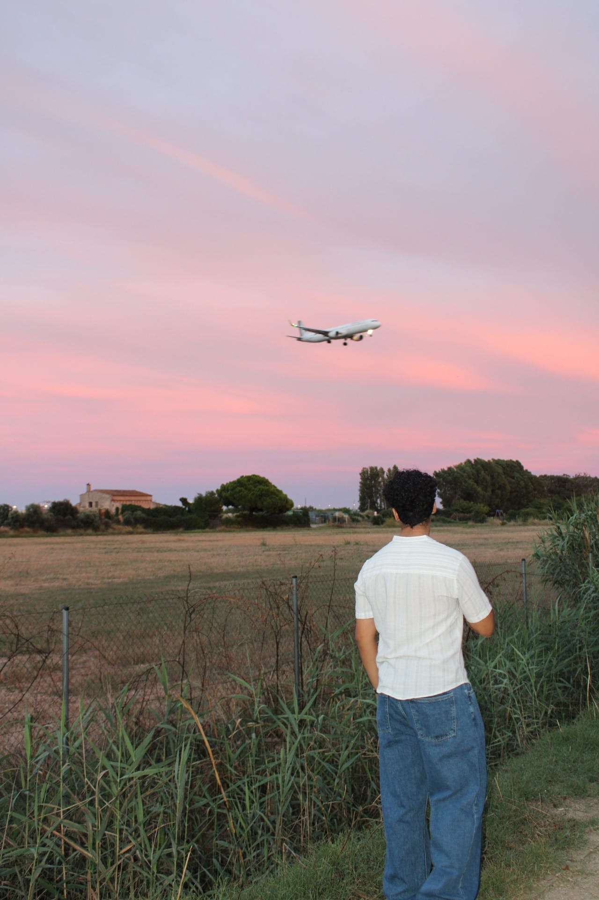

Hola! Soc Sohaib Azimi. La meva passió per la tecnologia va començar quan era petit, desmuntant ordinadors per entendre com funcionaven per dins. Avui dia, aquesta curiositat s'ha convertit en la meva professió i el meu estil de vida.
Actualment estic cursant el Grau Superior en Administració de Sistemes Informàtics en Xarxa (ASIX) a l'Institut Joaquim Mir. La meva formació em permet tenir una visió global de la tecnologia: des de l'arquitectura de servidors i el manteniment de xarxes, fins al disseny d'interfícies web modernes.
Em considero una persona resolutiva, autodidacta i sempre disposada a afrontar nous reptes. Més enllà de l'aspecte tècnic, crec fermament en el poder del disseny i la usabilitat. Un bon sistema no només ha de ser segur i ràpid, sinó també intuïtiu i agradable per a l'usuari final.
Quan no estic escrivint línies de codi o configurant servidors, m'agrada investigar sobre ciberseguretat, aprendre nous llenguatges de programació com Python, o simplement gaudir d'un bon cafè mentre llegeixo sobre les últimes tendències en disseny UX/UI.
